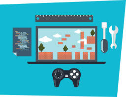
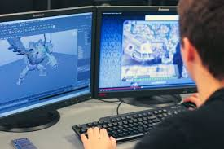

Tentangku.com
Kegiatanku
• Hobi

Hobi saya adalah menulis. Saya telah menulis saat
smp, Saya senang dengan hobi saya. Sekarang hobi saya adalah membuat
novel. Ini sesuatu tentang menulis juga. Di mana hobi dan kemampuan
saya menjadi lebih terlatih. Menghabiskan banyak waktu dalam
jaringan. Dengan webnovel,
Selain menulis hobi saya membuat game kecil dengan unity berhubung
sekolah jurusan rekayasa perangkat lunak saya selalu mencari
tutorial di youtube dan membuat game 2d dan platform
• Sekolah

Saya bersekolah di sekolah yang bersih dan indah sekolah
Smk 2 Budurandisana terdapat guru yang mengajari ilmu komputer, saya berada di
jurusan RPL(Rekayasa Perangkat Lunak)
SMK Negeri 2 Buduran berasal dari Sekolah Menengah Ekonomi Atas yang
sebelumnya merupakan peningkatan sekolah dari Sekolah Menengah
Ekonomi Pertama di Porong ditingkatkan menjadi Sekolah Menengah
Ekonomi Atas yang diterbitkan melalui Keputusan Menteri Pendidikan
dan Kebudayaan Republik Indonesia atas nama Sekretaris Jenderal T.
Umar Ali Nomor : 017/0/1979 tanggal 29 Januari 1979. Bersama itu
pula yang menjabat sebagai Kepala Sekolah Menengah Ekonomi Atas yang
pertama dijabat oleh Bapak Drs. Heru Soejipto.
• Cita-Citaku

Saya bercita-cita menjadi seorang developer game dan membuat perusahaan game yang terkenal dan ikut berkaloborasi dengan perusahaan terkenal lainnya untuk mengembangkan sebuah game terbaik
• Next 10 year
Pertama saya akan kuliah untuk menambah ilmu dalam bidang developer game dan membuat provit kecil-kecilan dari game yang dibuat. saat selesai kuliah saya dan teman teman saya melakukan project besar untuk membuat game dan membuat brand sendiri. saat sudah mendapat profit kecil saya akan membuat perusahaan kecil yang membuat game android dan pc.